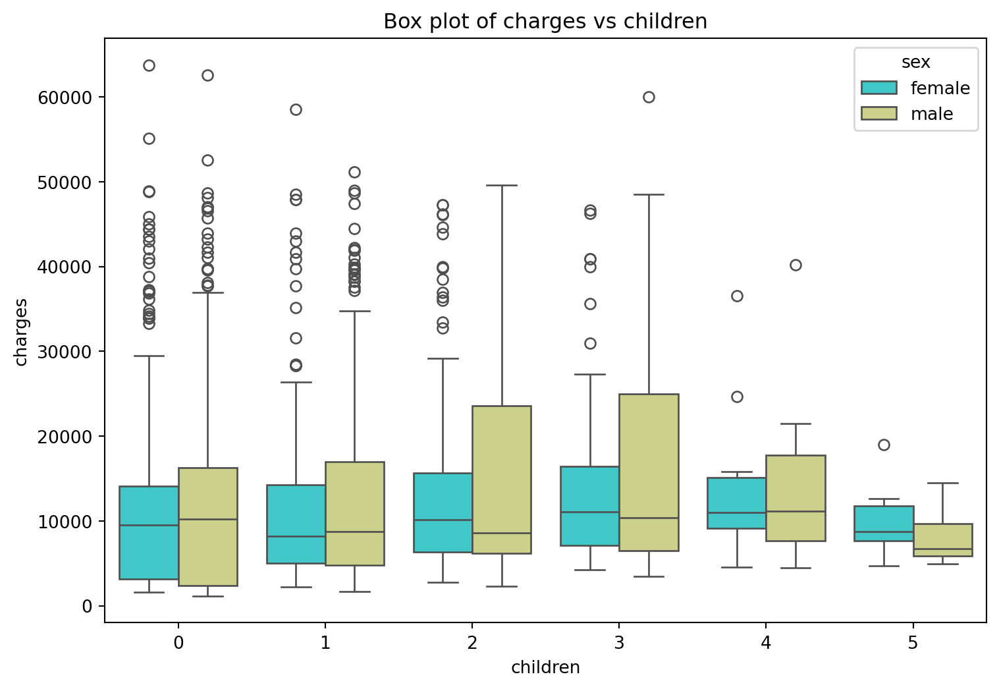
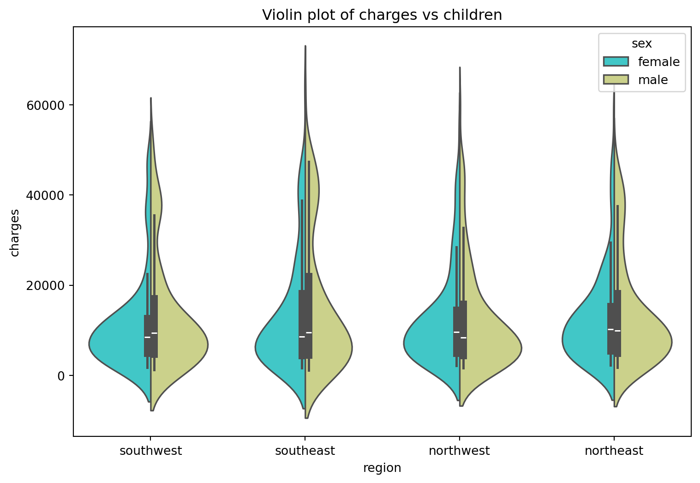
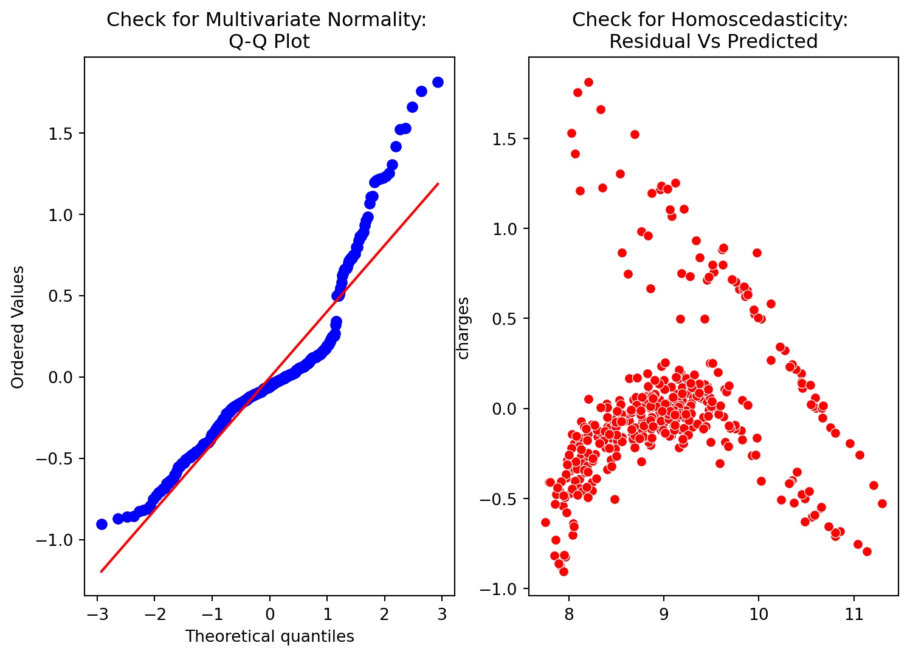

# Import library
import pandas as pd #Data manipulation
import numpy as np #Data manipulation
import matplotlib.pyplot as plt # Visualization
import seaborn as sns #Visualization
import warnings
warnings.filterwarnings('ignore')Contents:
What Is Linear Regression?
Example of Linear Regression with US Health Insurance dataset.
Data Preprocessing
Data Visualization
Model Implementation
Evaluation
Definition & Working principle
Linear regression is a supervised learning technique employed when the target or dependent variable consists of continuous real numbers. It aims to establish a connection between the dependent variable, denoted as y and one or multiple independent variables, typically represented as x, by determining the best-fit line. This approach operates based on the principle of Ordinary Least Squares (OLS) or Mean Square Error (MSE). In statistical terms, OLS is a method used to estimate the unknown parameters of the linear regression function, with the objective of minimizing the sum of squared differences between the observed dependent variable in the given dataset and the values predicted by the linear regression function.
Import Library and Dataset
Since this post doesn’t specify an explicit image, the first image in the post will be used in the listing page of posts.
# Import dataset
df = pd.read_csv('/home/tpriya/CS5525/MLBlog/posts/linregression/insurance.csv')
print('\nNumber of rows and columns in the data set: ',df.shape)
print('')
df.head()
Number of rows and columns in the data set: (1338, 7)
| age | sex | bmi | children | smoker | region | charges | |
|---|---|---|---|---|---|---|---|
| 0 | 19 | female | 27.900 | 0 | yes | southwest | 16884.92400 |
| 1 | 18 | male | 33.770 | 1 | no | southeast | 1725.55230 |
| 2 | 28 | male | 33.000 | 3 | no | southeast | 4449.46200 |
| 3 | 33 | male | 22.705 | 0 | no | northwest | 21984.47061 |
| 4 | 32 | male | 28.880 | 0 | no | northwest | 3866.85520 |
""" for our visualization purpose will fit line using seaborn library only for bmi as independent variable
and charges as dependent variable"""
sns.lmplot(x='bmi',y='charges',data=df,aspect=1.5, height=4)
plt.xlabel('Boby Mass Index$(kg/m^2)$: as Independent variable')
plt.ylabel('Insurance Charges: as Dependent variable')
plt.title('Charge Vs BMI');df.describe()| age | bmi | children | charges | |
|---|---|---|---|---|
| count | 1338.000000 | 1338.000000 | 1338.000000 | 1338.000000 |
| mean | 39.207025 | 30.663397 | 1.094918 | 13270.422265 |
| std | 14.049960 | 6.098187 | 1.205493 | 12110.011237 |
| min | 18.000000 | 15.960000 | 0.000000 | 1121.873900 |
| 25% | 27.000000 | 26.296250 | 0.000000 | 4740.287150 |
| 50% | 39.000000 | 30.400000 | 1.000000 | 9382.033000 |
| 75% | 51.000000 | 34.693750 | 2.000000 | 16639.912515 |
| max | 64.000000 | 53.130000 | 5.000000 | 63770.428010 |
Check for missing value
# Check for missing values in the DataFrame
missing_values = df.isnull().sum()
print("Missing values count per column:")
print(missing_values)Missing values count per column:
age 0
sex 0
bmi 0
children 0
smoker 0
region 0
charges 0
dtype: int64f= plt.figure(figsize=(9,4))
ax=f.add_subplot(121)
sns.histplot(df['charges'],bins=50,color='r',ax=ax)
ax.set_title('Distribution of insurance charges')
ax=f.add_subplot(122)
sns.histplot(np.log10(df['charges']),bins=40,color='b',ax=ax)
ax.set_title('Distribution of insurance charges in $log$ sacle')
ax.set_xscale('log');f = plt.figure(figsize=(9,6))
ax = f.add_subplot(121)
sns.violinplot(x='sex', y='charges',data=df,palette='Wistia',ax=ax)
ax.set_title('Violin plot of Charges vs sex')
ax = f.add_subplot(122)
sns.violinplot(x='smoker', y='charges',data=df,palette='magma',ax=ax)
ax.set_title('Violin plot of Charges vs smoker');From left plot the insurance charge for male and female is approximatley in same range,it is average around 5000 bucks. In right plot the insurance charge for smokers is much wide range compare to non smokers, the average charges for non smoker is approximately 5000 bucks. For smoker the minimum insurance charge is itself 5000 bucks.
plt.figure(figsize=(9,6))
sns.boxplot(x='children', y='charges',hue='sex',data=df,palette='rainbow')
plt.title('Box plot of charges vs children');
plt.figure(figsize=(9,6))
sns.violinplot(x='region', y='charges',hue='sex',data=df,palette='rainbow',split=True)
plt.title('Violin plot of charges vs children');
f = plt.figure(figsize=(9,6))
ax = f.add_subplot(121)
sns.scatterplot(x='age',y='charges',data=df,palette='magma',hue='smoker',ax=ax)
ax.set_title('Scatter plot of Charges vs age')
ax = f.add_subplot(122)
sns.scatterplot(x='bmi',y='charges',data=df,palette='viridis',hue='smoker')
ax.set_title('Scatter plot of Charges vs bmi')
plt.savefig('sc.png');Data Preprocessing
Data preprocessing in machine learning involves encoding categorical data into numerical form, as machine learning algorithms typically require numerical input. There are several techniques for this:
Label Encoding: This method involves converting categorical labels into numerical values to enable algorithms to work with them.
One-Hot Encoding: One-hot encoding represents categorical variables as binary vectors, making the data more expressive. First, the categorical values are mapped to integer values (label encoding), and then each integer is converted into a binary vector with all zeros except for the index of the integer, which is marked with a 1.
Dummy Variable Trap: This situation occurs when independent variables are multicollinear, meaning that two or more variables are highly correlated, making it possible to predict one variable from the others.
To simplify this process, the pandas library offers a convenient function called get_dummies. This function allows us to perform all three steps in a single line of code. We can use it to create dummy variables for features like ‘sex,’ ‘children,’ ‘smoker,’ and ‘region.’ By setting the drop_first=True parameter, we can automatically eliminate the dummy variable trap by dropping one variable and retaining the original variable. This makes data preprocessing more straightforward and efficient.
# Dummy variable
categorical_columns = ['sex','children', 'smoker', 'region']
df_encode = pd.get_dummies(data = df, prefix = 'OHE', prefix_sep='_',
columns = categorical_columns,
drop_first =True,
dtype='int8')# Lets verify the dummay variable process
print('Columns in original data frame:\n',df.columns.values)
print('\nNumber of rows and columns in the dataset:',df.shape)
print('\nColumns in data frame after encoding dummy variable:\n',df_encode.columns.values)
print('\nNumber of rows and columns in the dataset:',df_encode.shape)Columns in original data frame:
['age' 'sex' 'bmi' 'children' 'smoker' 'region' 'charges']
Number of rows and columns in the dataset: (1338, 7)
Columns in data frame after encoding dummy variable:
['age' 'bmi' 'charges' 'OHE_male' 'OHE_1' 'OHE_2' 'OHE_3' 'OHE_4' 'OHE_5'
'OHE_yes' 'OHE_northwest' 'OHE_southeast' 'OHE_southwest']
Number of rows and columns in the dataset: (1338, 13)from scipy.stats import boxcox
y_bc,lam, ci= boxcox(df_encode['charges'],alpha=0.05)
#df['charges'] = y_bc
# it did not perform better for this model, so log transform is used
ci,lam
## Log transform
df_encode['charges'] = np.log(df_encode['charges'])The original categorical variable are remove and also one of the one hot encode varible column for perticular categorical variable is droped from the column. So we completed all three encoding step by using get dummies function.
Train Test split
from sklearn.model_selection import train_test_split
X = df_encode.drop('charges',axis=1) # Independet variable
y = df_encode['charges'] # dependent variable
X_train, X_test, y_train, y_test = train_test_split(X,y,test_size=0.3,random_state=23)# Step 1: add x0 =1 to dataset
X_train_0 = np.c_[np.ones((X_train.shape[0],1)),X_train]
X_test_0 = np.c_[np.ones((X_test.shape[0],1)),X_test]
# Step2: build model
theta = np.matmul(np.linalg.inv( np.matmul(X_train_0.T,X_train_0) ), np.matmul(X_train_0.T,y_train)) # The parameters for linear regression model
parameter = ['theta_'+str(i) for i in range(X_train_0.shape[1])]
columns = ['intersect:x_0=1'] + list(X.columns.values)
parameter_df = pd.DataFrame({'Parameter':parameter,'Columns':columns,'theta':theta})# Scikit Learn module
from sklearn.linear_model import LinearRegression
lin_reg = LinearRegression()
lin_reg.fit(X_train,y_train) # Note: x_0 =1 is no need to add, sklearn will take care of it.
#Parameter
sk_theta = [lin_reg.intercept_]+list(lin_reg.coef_)
parameter_df = parameter_df.join(pd.Series(sk_theta, name='Sklearn_theta'))The parameter obtained from both the model are same.So we successfully build our model using normal equation and verified using sklearn linear regression module. Let’s move ahead, next step is prediction and model evaluation.
# Normal equation
y_pred_norm = np.matmul(X_test_0,theta)
#Evaluvation: MSE
J_mse = np.sum((y_pred_norm - y_test)**2)/ X_test_0.shape[0]
# R_square
sse = np.sum((y_pred_norm - y_test)**2)
sst = np.sum((y_test - y_test.mean())**2)
R_square = 1 - (sse/sst)
print('The Mean Square Error(MSE) or J(theta) is: ',J_mse)
print('R square obtain for normal equation method is :',R_square)The Mean Square Error(MSE) or J(theta) is: 0.18729622322982042
R square obtain for normal equation method is : 0.7795687545055301# sklearn regression module
y_pred_sk = lin_reg.predict(X_test)
#Evaluvation: MSE
from sklearn.metrics import mean_squared_error
J_mse_sk = mean_squared_error(y_pred_sk, y_test)
# R_square
R_square_sk = lin_reg.score(X_test,y_test)
print('The Mean Square Error(MSE) or J(theta) is: ',J_mse_sk)
print('R square obtain for scikit learn library is :',R_square_sk)The Mean Square Error(MSE) or J(theta) is: 0.1872962232298189
R square obtain for scikit learn library is : 0.7795687545055319Model validation is a crucial step in assessing the performance of a linear regression model, and it involves checking various assumptions. The key assumptions for a linear regression model are as follows:
Linear Relationship: Linear regression assumes that the relationship between the dependent and independent variables is linear. You can verify this assumption by creating a scatter plot of actual values against predicted values.
Normality of Residuals: The residual errors should follow a normal distribution. This can be checked by examining the distribution of the residuals.
Mean of Residuals: The mean of the residual errors should ideally be close to 0.
Multivariate Normality: Linear regression assumes that all variables are multivariate normally distributed. This assumption can be assessed using a Q-Q plot.
Multicollinearity: Linear regression assumes minimal multicollinearity, meaning that independent variables are not highly correlated with each other. The variance inflation factor (VIF) can help identify and measure the strength of such correlations. A VIF greater than 1 but less than 5 indicates moderate correlation, while a VIF less than 5 suggests a critical level of multicollinearity.
Homoscedasticity: The data should exhibit homoscedasticity, which means that the residuals are roughly equal across the regression line. You can assess this by creating a scatter plot of residuals against the fitted values. If the plot shows a funnel-shaped pattern, it indicates heteroscedasticity.
Ensuring these assumptions are met is essential to build a reliable linear regression model.
# Check for Linearity
f = plt.figure(figsize=(9,5))
ax = f.add_subplot(121)
#sns.scatterplot(data=df, y_test, y_pred_sk)
sns.scatterplot(x=y_test,y=y_pred_sk,ax=ax,color='r')
ax.set_title('Check for Linearity:\n Actual Vs Predicted value')
# Check for Residual normality & mean
ax = f.add_subplot(122)
sns.histplot((y_test - y_pred_sk),ax=ax,color='b')
ax.axvline((y_test - y_pred_sk).mean(),color='k',linestyle='--')
ax.set_title('Check for Residual normality & mean: \n Residual eror');# Check for Multivariate Normality
# Quantile-Quantile plot
f,ax = plt.subplots(1,2,figsize=(9,6))
import scipy as sp
_,(_,_,r)= sp.stats.probplot((y_test - y_pred_sk),fit=True,plot=ax[0])
ax[0].set_title('Check for Multivariate Normality: \nQ-Q Plot')
#Check for Homoscedasticity
sns.scatterplot(y = (y_test - y_pred_sk), x= y_pred_sk, ax = ax[1],color='r')
ax[1].set_title('Check for Homoscedasticity: \nResidual Vs Predicted');
# Check for Multicollinearity
#Variance Inflation Factor
VIF = 1/(1- R_square_sk)
VIF4.536561945911138Here are the model assumptions for linear regression, along with their assessment:
The actual vs. predicted plot doesn’t form a linear pattern, indicating a failure of the linear assumption.
The mean of the residuals is close to zero, and the residual error plot is skewed to the right.
The Q-Q plot shows that values greater than 1.5 tend to increase, suggesting a departure from multivariate normality.
The plot exhibits heteroscedasticity, with errors increasing after a certain point.
The variance inflation factor is less than 5, indicating the absence of multicollinearity.